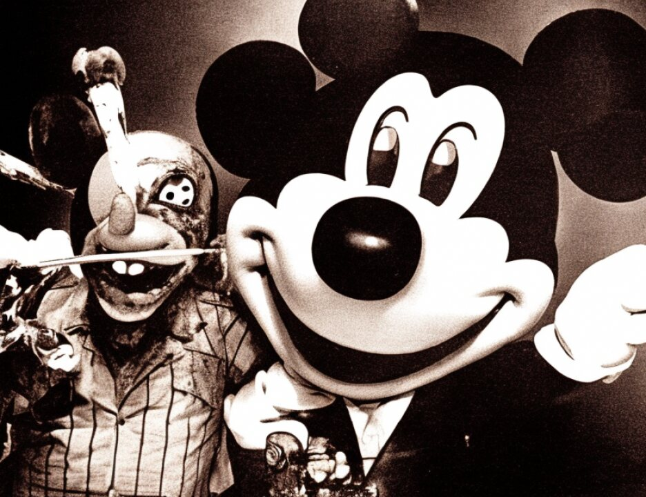

6 Q. How long did that process take?
7 A. 15 to 20 minutes.
8 Q. Would it be fair to say that a swabbing is a piece of
9 cloth or cotton that is immersed in some liquid and is then
10 rubbed over various areas?
11 A. Yes. It's generally a cotton ball, but that's an accurate
12 description of how it's done.
13 Q. And then the swabs are maintained in separate containers
14 or envelopes?
15 A. They are each individually packaged, yes.
16 Q. And again, care is taken that the swabs don't come into
17 contact with each other for fear of contamination?
18 A. And in addition, we change gloves and we use a different
19 set of forceps for each swab we take.
20 Q. Based on your training, this is the proper and appropriate
21 way to go about gathering evidence, is that accurate?
22 A. That is one of the methods to be used for collecting that,
23 yes.
24 Q. And that's the method that, one of the methods you have
25 been trained in as an FBI agent?
1835
1 A. That's correct.
2 Q. And a method you used that day, is that fair to say?
3 A. That is correct, yes.
4 Q. And everybody with you maintained the same, used the same
5 procedures?
6 A. Yes. In fact, in this case we were the only two who did
7 that whole portion of the search. The other people remained
8 outside until we had completed.
9 Q. So you can be sure, because it was you and this other
10 gentleman, that these procedures were maintained between the
11 two of you?
12 A. Yes, that's correct.
13 Q. Are there also concerns from an investigative standpoint
14 with regard to chain of custody?
15 A. Yes.
16 Q. Could you tell the jury what that phrase means based on
17 law enforcement, your knowledge of law enforcement?
18 A. The term "chain of custody" refers to a direct
19 relationship where you can positively account for the
20 whereabouts of any item of evidence that is collected.
21 Someone always has positive control over the evidence or can
22 account for it being secured in an appropriate manner.
23 Q. What's the reason for that particular procedure?
24 A. Again, it's to ensure that the evidence is maintained in
25 a, I guess in a secure and in the same form as which it's been
1836
1 collected.
2 Q. Again, the concern might very well be contamination, that
2